Tutorial: Creating a Cymphony Project¶
Assume that Cymphony is already running by following Run from Command Line.
This section will describe each functionality Cymphony Framework provides to manage collaborative tasks. Here you can find a step-by-step guide to create a Cymphony project. Generally speaking, creating a Cymphony project requires thw following steps:
Create a Cymphony Project, which may contain a set of jobs, as a Requester
For each Cymphony Job, invite a set of workers
The worker will annotate tasks assigned to them
Also, we provide a monitor tool for the requester to check the progress of the project.
Requester: a Project Manager¶
As you Login in the system as a Requester, it will display the List of Projects, as shown below. In this example, this requester has already created two projects.
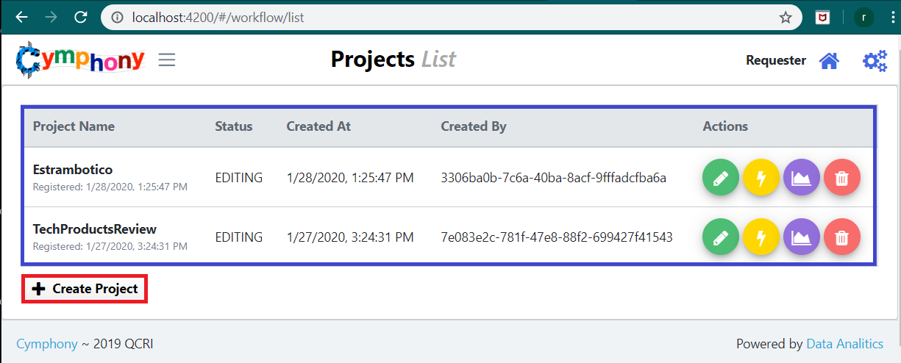The table marked in blue lists the associated Projects for this User. Each line shows the name, current status, date of creation and the creator of each project. At the end of each row, there are Actions applicable to each specific project.
The green button with a pen allows to Edit the selected project Workflow. Inside of this module the Requester can change the definition of every Job, SQL or Sample operations defined on it. This option will be available only in case the Project is not in Execution.
The yellow button with a thunder starts the execution of the project. This means invited workers will be able to Annotate the tuples to complete the workload.
The purple button with a chart displays general information of every operation in the Workflow. If the user selects a particular operation on the graph, it will display charts with major details about that part of the process. This option will be available only in case the Project is in Execution.
The red button with a trash can deletes the selected project and cancels every pending work.
Next, we will describe how to create a new project, by clicking Create Project within the red rectangle.
Requester: Create a Project¶
In order to start the creation of a Workflow, the user needs a basic understanding of the Project Creation interface. As the figure below shows the screen is divided into three different Components:
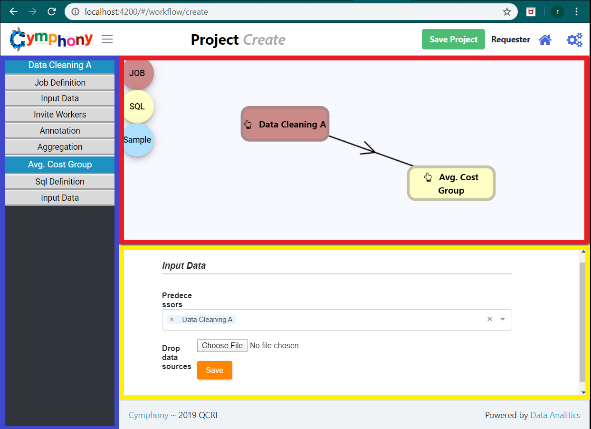Workflow Drawer¶
The component marked in Red is used to start drawing your workflow. By dragging the 3 circular buttons from the upper left border, you can add new Operators to your workflow, either a Job, a SQL, or a Sample operation. As soon as you Drop the desired Operation, a new Entry with the name of the Operation you just created will appear in the blue marked section.
Form Labels¶
The component marked in blue shows for each Operation that is being created, all the forms the Requester needs to fill in order to make the workflow executable. We will show how to fill the parameters for each operation.
As soon as an operation is added to the Workflow, one entry will appear in this Section. The structure of this entry is described below:
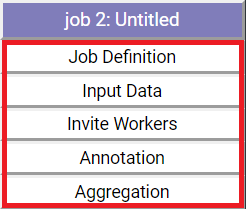{kind=link}
The Purple header indicates the Name of the Operation. The following white labels marked in red indicate the forms that need to be filled by the User. To start filling these forms, the user needs to click on one of them and the Yellow Marked Section will be updated showing the related form.
Form Space¶
The component marked in yellow is initially empty. When one of the labels below an Operation is clicked, this component will display the related form. Such a form contain every input the user needs to provide for one concrete aspect of the Operation.
The forms to fill depends on the type of Operation (Job, SQL or Sample), more specifically:
Job: Job Definition, Input Data, Invite Workers, Annotation and Aggregation.
SQL: SQL Definition and Input Data.
Sample: Sample Definition and Input Data.
After completing the form you must save the changes, this action will change the color of the Form Label in the blue Section. If every form has been already provided to the Operation, the color of the header will turn Green.
Creating the First Node¶
At the beginning, the Red-marked component will be empty. At this point, we will drag and drop the first node into the “Workflow Drawer”, let’s start with a Job node.
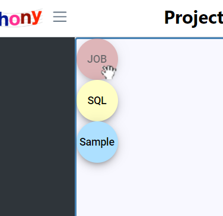 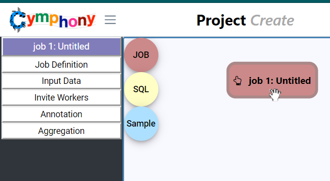{kind=link}
{kind=link}
Two events happen on the screen:
The Operation “Node” appears and is asssigned the name “job 1: Untitled”.
In the Form Labels panel, on the sidebar, a new Form Label with header “job 1: Untitled” appears. This means that every item listed below refers to a form to be filled for the Operator Node “job 1: Untitled”.
To start defining this new Job Operator, the User click on the first form on the panel.
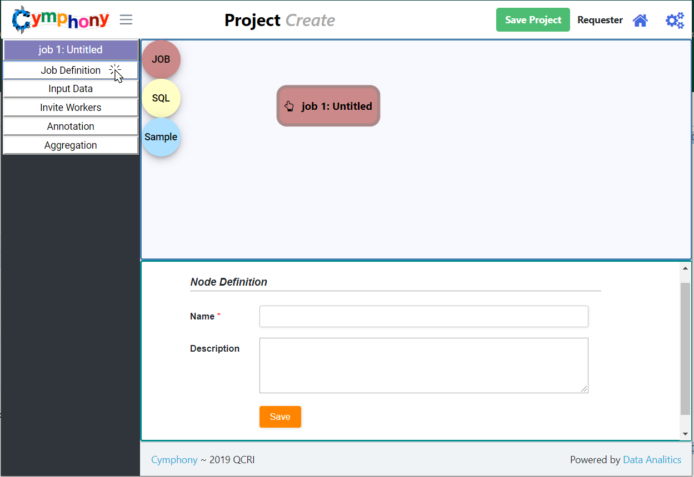At the bottom of the screen you will see the “Job Definition” Form. After filling the required entries, just Save the template pressing the orange button. For tutorial purposes the “Name” has been filled as “Info Extraction”.
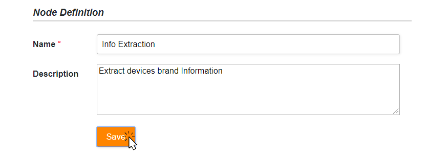{kind=link}
At this point the User needs to specify the Input Data for the tuples to be annotated by clicking over “Input Data” Form and selecting a File as a Data Source. The uploaded file must in a CSV format with a header specifying the name of each columns.
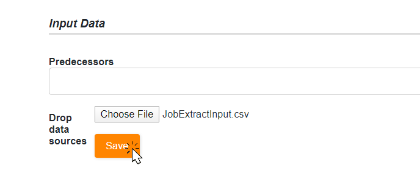{kind=link}
The next Form to fill will be “Invite Workers”. The User will upload another file where each line contains an email address of a user invited to participate in this Job. The Form allows us to add users directly using “Invite Workers by Email” section.
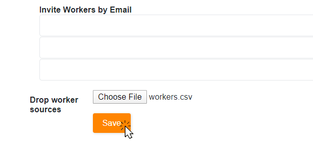{kind=link}
In the “Annotation” Form, the Requester needs to provide more information about the Worker requirements. The “Annotation Data Type” specifies the type of data the System will assign as Output of this Job, either Text, Number or Boolean.
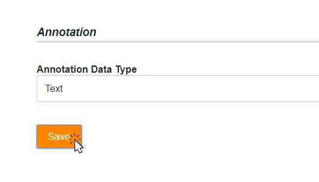{kind=link}
In the “Aggregation” Form, the requester needs to specify how to aggregate the annotations from workers.
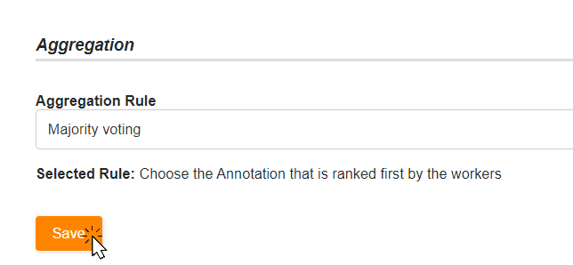{kind=link}
At the end of this process, if the User submit all the listed forms in the Label “Info Extraction” Operation, the header will turn green. This means the Operation is now Executable.
Assuming the user wants to count the number of appearances of each extracted bran (obtained from the aggegrated annotations), a SQL operation needs to be added to the workflow.
After dragging the Yellow SQL button into the Workflow Drawer and defining the Operation relevant to the job. The User needs to link the previous generated Job with this SQL. To do this, the User simply usw the “Input Data” Form of the new SQL Operation; instead of upload a file the User defines a Predecessor Operation using the Section “Predecessors” of the Form.
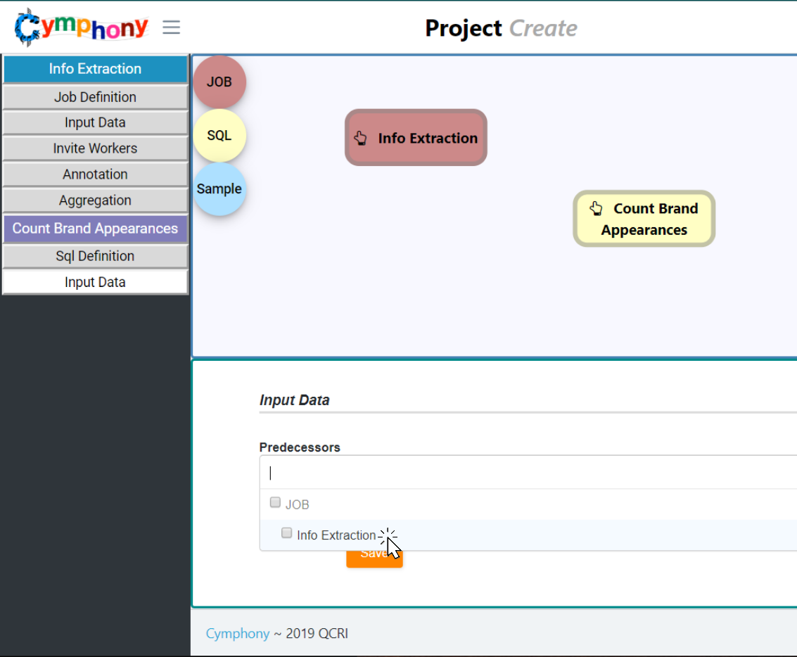{kind=link}
Finally, the User just needs to Save the changes. The User has now the complete Structure of the Workflow If the Project does not exist, the System will ask for a Project name.
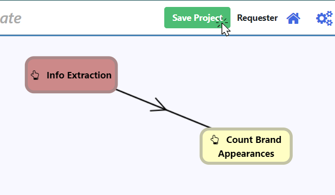 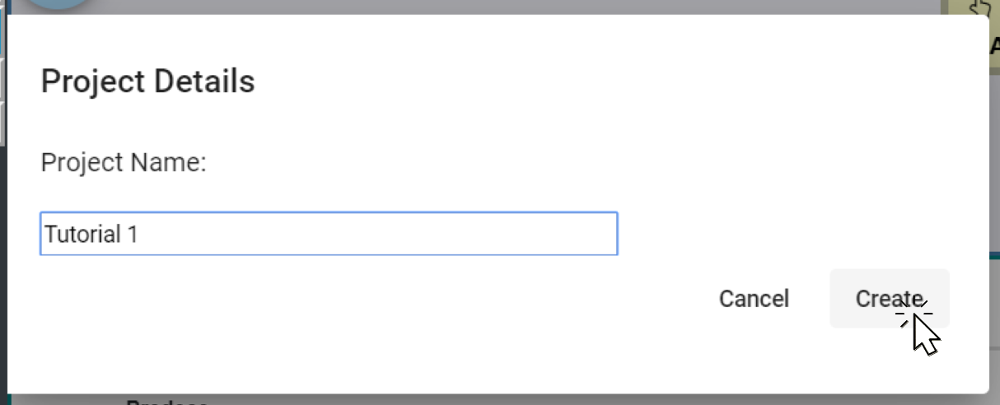{kind=link}
{kind=link}
At this point, you have defined Executable Cymphony workflow.
Worker: Manual Annotation¶
To start working on a Job, a User needs to login as a Worker. The user is presented with a list of Projects, each project listing pending annotation jobs.
Using the green Button with a pen, the User will receive HITs of tasks, to start annotating. The table that has been displayed shows the Row data provided by the Requester. The column Annotation is the one the User will use to fill the Answer. While it is not necessary to fill every entry, this could affect the Worker’s quality.